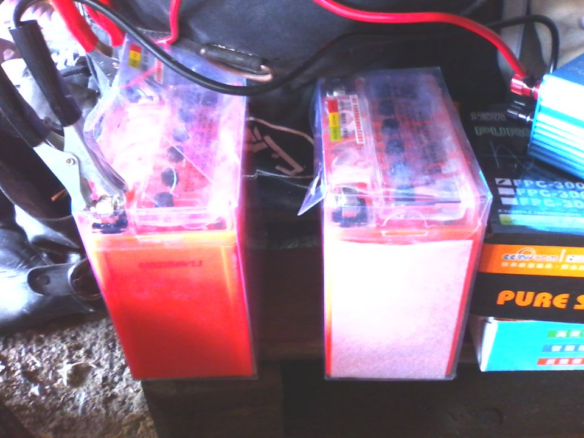
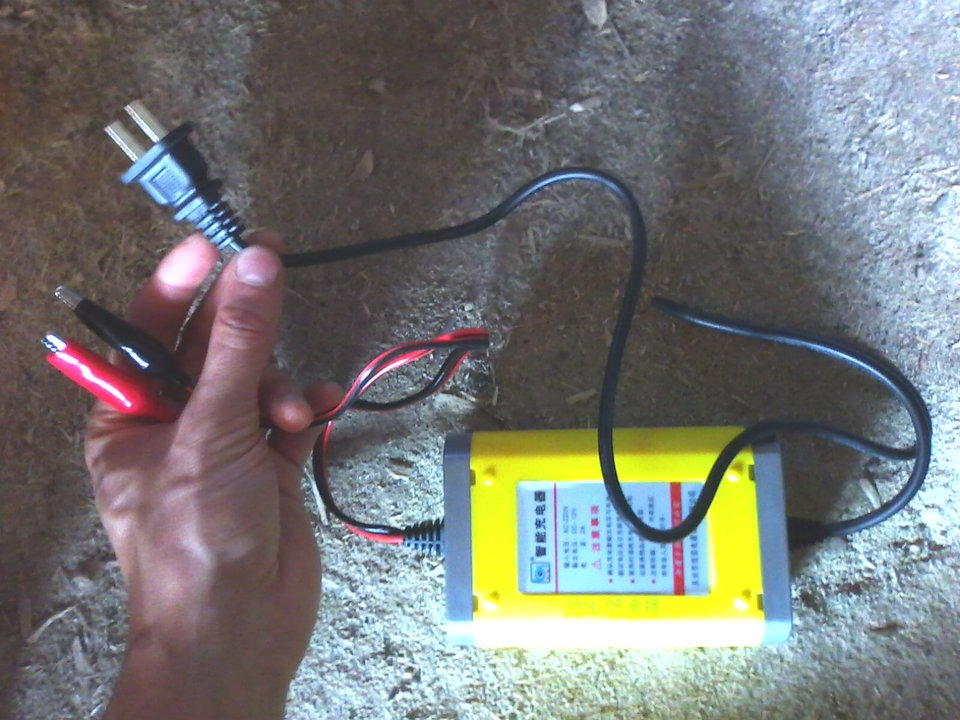
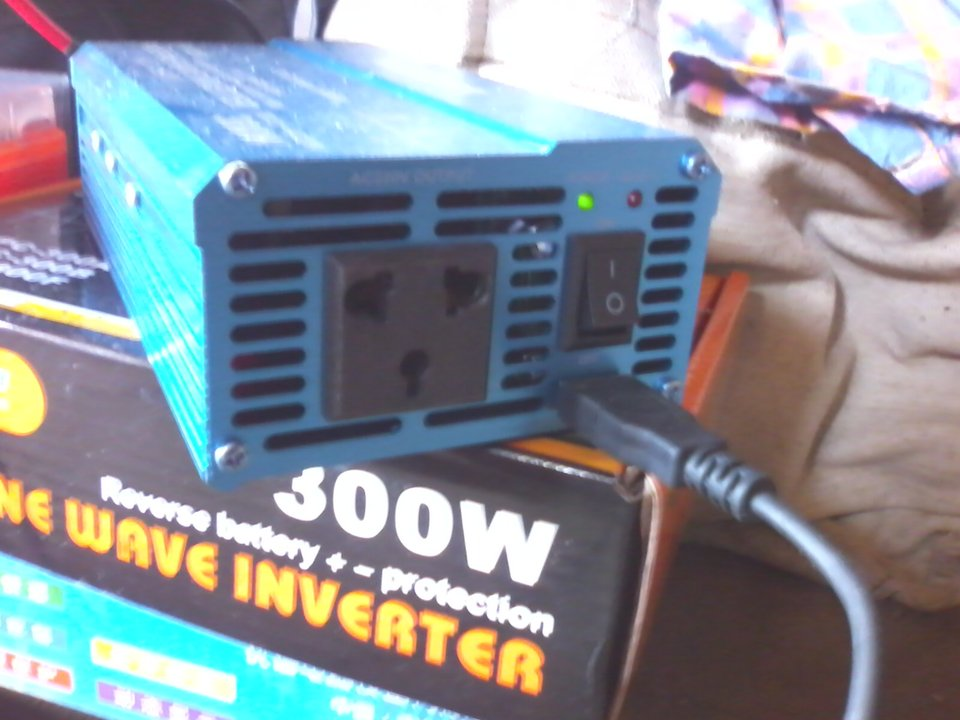

Электрификация экодома
В нашем экодоме появилось электричество! Вот сижу, пишу эту статью на планшете, и уже не боюсь, что если он сядет, то придётся ехать в город заряжаться. Теперь достаточно дотянуться до розетки - и всё!
Но пока наша система электрификации неполноценна, она так же зависит от поездок в город, просто появилась возможность автономить около двух недель. Но неполноценность системы не помешает мне поделиться с вами хорошим настроением и поразмышлять о планах на её развитие, да и вообще об электрификации загородного дома.
Обеспечить себя электричеством
К моменту, когда наша молодая семья столкнулась с проблемой обеспечения себя электричеством, перед нашими глазами был пример соседа, к которому уже провели линию из деревни. В общем-то мы тоже можем подключиться к этой линии, и это даже довольно дёшево (до 10 т.р.), но бюрократически эта процедура очень долгая и в нашем случае займёт около года.
Но год этот куковать без лампочки Ильича мы не хотим, и решили отыскать автономное решение. А их на сегодняшний день доступно только два: либо ветер, либо Солнце. Я давно хочу сделать ветряк своими руками, но это требует времени, а оно сейчас целиком уходит на доделку дома и подготовку его к зиме. Напомню, у нас эксперимент с жизнью и стройкой на 10-15 т.р. в месяц на двоих, поэтому раскидываться деньгами на покупку ветряка бюджет не позволяет. Но вот на небольшую солнечную систему - хватит.
Учитывая суровое ограничение в средствах, было принято решение взять недорогую систему, которая бы работала прямо сейчас, но при этом имела возможности к расширению. Какой бы по мощности ни была система, в ней обязательно будут присутствовать источник заряда (солнечная панель, ветряк) и аккумулятор, который будет этот заряд складировать.
Аккумуляторы
Общение с электриками и чтение интернетов выявили, что основная проблема современной альтернативной энергетики - аккумуляторы. Они - самое слабое звено любой современной автономной системы, либо подлежащее частой замене, обслуживанию, но недорогое, либо не требующее обслуживания, долгоживущее, но дорогое.
Обычные щелочные автомобильные аккумуляторы дёшевы, но в автономной системе долго не проработают. Плюс, во время работы они выделяют вредные для человека и при этом взрывоопасные газы, так что требуют отдельного вентилируемого помещения. Несколько лучше дела обстоят с гелевыми аккумуляторами на стекловолоконных пластинах (AGM): они герметичны, не выделяют газов, но для солнечной системы также нежелательны, т.к. боятся глубокого разряда. Лучшее, что в настоящий момент может предложить альтернативным энергетикам рынок - гелевые аккумуляторы (GEL). Они не выделяют газов и не требуют отдельного помещения, не обладают памятью и не боятся разряда, но стоят дороже своих собратьев.
Но скупой платит дважды, и мы решили не пожалеть средств именно на гелевый аккум. А хитрость в том, что мы взяли два вот таких, небольших и по габаритам, и по весу (около 4 кг каждый), чтобы в экстренных случаях можно было с лёгкостью отнести его к соседу, подзарядить. И экстренный случай наступил сразу, т.к. оказалось, что одновременно привезти и аккумуляторы, и солнечную панель из соседнего Китая наши друзья, живущие там, не могли: и габаритно, и тяжело...
Заряжаем

Покупку солнечной панели мы решили отложить на месяц, а пока пользоваться аккумуляторами в таком режиме: пока первый работает, второй заряжается. Первый сел - понесли заряжать, принесли заряженный второй. Взяли вот эти аккумуляторы, позиционирующиеся для электромотоциклов - 2 штуки по 9000 мА/ч (12-вольтовые).Вроде бы и маловато, но, учитывая темпы расхода нами электричества, замена будет происходить не чаще чем раз в неделю. Пока мы не вошли во вкус и используем аккум лишь для зарядки двух телефонов (вместе около 1600 мА/ч) и планшета (3200 мА/ч). В ближайшей перспективе в списке потребителей появятся несколько светодиодных лампочек и нетбук с батареей на 4400 мА/ч.

Ещё раз повторюсь, решение с тасканием временное, пока не придут солнечные панели. А пока будем заряжать от розетки соседа или в городе, т.к. всё равно туда ездим раз в неделю, и вес аккумов позволяет это делать не напрягаясь.Для зарядки аккумулятора от розетки мы приобрели соответствующее устройство, выдающее 12В 2А. Самое то для наших аккумов. Кстати, вроде бы примерно такими же устройствами восстанавливают свинцово-щелочные1 аккумы.
Заряжаемся

Как я уже упоминал, аккумуляторы 12-вольтовые постоянного тока, и чтобы получить 220 вольт переменного, нужен инвертор. Был соблазн сразу взять мощный на киловатт-полтора "на вырост", но цены кусаются. И, по расчётам, все электроприборы, которые мы планируем использовать, одновременно тянут ватт 200-250. Так что остановились на таком инверторе 300 ватт в номинале (600 в пике).По заверениям производителя, этот инвертор потянет и дрель, и стиральную машину, и холодильник. Заявления смелые, но вряд ли он сможет делать это одновременно, да и холодильник разве что небольшой (хотя, большой нам и не нужен). Но нам и этого достаточно, ведь электричество необходимо нам пока лишь для работы телефонов, планшета, нетбука и пары лампочек.
Кстати, на этом инверторе есть не только розетка для 220-вольтовых приборов, но и USB-порт (5 вольт 2 ампера) для зарядки гаджетов, что очень удобно. Ведь на каждом этапе преобразования накапливаются потери, и чем меньше этих преобразований - тем лучше. Приходилось бы сначала 12 вольт преобразовывать в 220, и потом 220 в 5, а так сразу 12 в 5.
Перспективы развития
В ближайшее время планируем докупить солнечную панель на 100 ватт и контроллер. Контроллер - это штука, которая управляет процессами зарядки аккумуляторов и расхода заряда. В этот же контроллер в перспективе воткнётся ещё панель (возможно и не одна) и самодельный ветряк, когда до него дойдут руки. Вероятнее всего, и аккумуляторов докупить придётся, на этот раз уже не маленьких мобильных, а стационарных, больших и жирных.
Из потребителей потом появятся ещё с десяток лампочек, мощный рабочий ноутбук, студийные мониторы (профессиональные колонки, необходимые мне для работы. Это будет самый прожорливый потребитель в доме), возможно что-то ещё. Думаю, что мощность системы будет расти вместе с нашими аппетитами на электричество. Там, глядишь, придётся и инвертор взять помощнее...
Но тем система и хороша - можно повышать её мощность по мере необходимости. Самое интересное - я раньше боялся лезть в тему альтернативной энергетики, т.к. в электричестве можно сказать ничего не понимаю. Но всё оказалось просто в понимании и доступно в приобретении: 2 гелевых аккумулятора на 9Ач, зарядное устройство для них и инвертор на 300 ватт (600 в пике) вместе с доставкой обошлись нам в 3500 рублей. Красота!
Выводы
 Альтернативная энергетика становится всё более доступной для бытовых нужд простых смертных. Особенно если ваши аппетиты умеренны и вы не собираетесь электричеством топить дом. Задача обеспечить себя электроэнергией и не зависеть от центральных сетей и прихотей чубайсов - более чем реализуемая и посильная для молодой семьи. Чувство свободы и независимости преследовало меня пока я вёз аккумуляторы домой и достигло своего пика когда я в первый раз зарядил телефон не в городе, а в своём экодоме. Это ощущение многого стоит, и я желаю когда-нибудь испытать его и вам.
Альтернативная энергетика становится всё более доступной для бытовых нужд простых смертных. Особенно если ваши аппетиты умеренны и вы не собираетесь электричеством топить дом. Задача обеспечить себя электроэнергией и не зависеть от центральных сетей и прихотей чубайсов - более чем реализуемая и посильная для молодой семьи. Чувство свободы и независимости преследовало меня пока я вёз аккумуляторы домой и достигло своего пика когда я в первый раз зарядил телефон не в городе, а в своём экодоме. Это ощущение многого стоит, и я желаю когда-нибудь испытать его и вам.
В качестве курьёза:** после того, как пришли наши аккумуляторы, мой брат показал штуку, которую недавно приобрёл. Это был литий-ионный аккумулятор размером с маленькую книжку на 30000 мА/ч (по факту около 16500, что тоже крайне неплохо) с возможностью одновременной зарядки двух устройств (например, телефон и планшет), для чего прилагается куча разъёмов (miniUSB, microUSB, iPad, nokia), возможностью зарядки его от розетки, и - внимание - с встроенной солнечной панелью и весом всего в 261 грамм! И купил брат его всего за тыщу рублей! **Если б мы знали о существовании таких девайсов до того, как заказали аккумуляторы, мы бы пока вполне обошлись таковым.
Но я даже доволен, ведь это незнание подтолкнуло нас к началу сборки системы обеспечения нас альтернативным электричеством! Может даже получится, что мы решим не подключаться к деревенской линии и быть полностью независимыми от центральных сетей... Посмотрим, время покажет. Статья подошла к концу, планшет жалуется, что осталось меньше 10% заряда. Пойду ставить его на зарядку!
[1]: В комментариях поправляют, что свинцово-щелочных аккумуляторов нет, а есть свинцово-кислотные.
Комментарии
Антон
Тема интересная, но даже с учетом китая не дешевая. Я хорошо порыл в таобао, кстати почему то на такие инверторы не нарвался, хотя считаю что в такой мощности смысла практически нет. Дело в том что 300Вт не хватит ни на один электроинструмент, более того, не хватит и 1000Вт на большинство. Что тут говорить, мой блендер 2кВт, дрель 800Вт, компьютер+монитор+звук хороший и освещение, то же скорее всего будут вылазить за 300Вт. Кроме того все электродвигатели имеют реактивную мощность и для них нужно вдвое более мощный инвертор, чем указанная на них мощность, то есть для дрели 800Вт - нужно 1600 Вт инвертор. Короче с двигателями прямо таки проблема!
Ну а свет светодиодный, ноуты и телефоны, лучше запитывать напрямую от АКБ, используя 12 Вольтовые лампы (у меня такие есть, цена примерно 120р за 7Вт, на тао бао с доставкой) и специальные автомобильные блоки питания для ноутов. В этом случае у вас не будет потерь на преобразовании в 220В, и сам преобразователь не будет жрать энергию, да и надобность в нем полностью отпадет.
А преобразователь если и брать, то не слабее 1,5кВт, а лучше много больше, что бы потянул инструмент. Но и тут не все просто, при таких мощнастях ток от батареи будет при питании от 12В составлять 1500/12=125Ампер, поэтому желательно брать инвертор на 48Вольт, тогда токи будут в 4 раза меньше, но АКБ придется цеплять 4 шт последовательно, ну или Li-Ion 3,7В*13шт. К сожалению такие инверторы найти не могу по приемлемой цене, в твоей ссылке (которая кстати не работает), есть такой но на 500Вт, дело в том что китаец в теме этого не указал, вероятно есть и другие варианты подобные, но как найти не знаю (((
Мощный инвертор имеет большой вес 20-80 кг, это тоже беда всмысле доставки. Но возможно есть более легкие импульсные.
Антон
Еще в копилку знаний автору)
Амперы сами по себе не отражают мощность, мощность отражают Ваты!
В статье ты сравниваешь Ампераж батарей на сотовом, планшете и в твоем АКБ, но сравнивать их нельзя. Нельзя потому, что у них разное напряжение! А значит и разная мощность при тех же амперах.
В телефоне 0,8А*3,7В=2,96 Вт*2 телефона = 6 Вт, в планшете скорее всего стоит АКБ на 7,4В*3,2А=23,68 А. Ну а твои геливые АКБ имеют мощность 12В*9А=108Вт.
Вот теперь мы можем примерно посчитать на сколько зарядов тебе хватит твоего АКБ, так как мы привели все батареи к одной характеристики, которая универсальна, для АКБ любого напряжения. Только нужно учесть что зарядка имеет КПД около 60%, остальная энергия потеряется, на преобразование и нагрев. Итого планшет мы сможем зарядить примерно 108/(23,68*1,4)= 3 раза, ну а телефон 108/(3*1,4)=25 раз. А вот при расчете реальной энергии запасенной в АКБ, в эту формулу придется добавить еще один коэффициент (до этого я его не учитывал, так как мы перетаскивали энергию между АКБ). И так если считать без него, то 7-ми ватная лампочка, может прогореть примерно 108/7=15 часов. Но беда в том, что АКБ не сможет отдать 108 Вт, реально он скорее всего отдаст половину, после чего напряжение на клеммах упадет до 10Вольт, что кстати даже для гелиевого АКБ думаю плохо. А следовательно после 5 Часов горения лампы его потребуется заряжать.
Антон
Нашел сегодня солнечные элементы 0,5В 8А 4Вт, по цене 8,6 юаней, это примерно 55р за штуку с доставкой. На 48 Вольтовую батарею 400Вт мощностью их понадобится 100 штук, то есть 5500р, ну и помучится с пайкой придется. Есть готовые панели на 200Вт за 3200 рублей, получается их даже выгоднее взять, цена почти та же, и при этом все собрано уже. Но они весят 20-25 кг, доставка обойдется в 4000-5000 тысяч рублей, а это уже невыгодно. Может кто знает как с ХейХе дешевле провезти через границу?
Нашел так же и БП для ноута от 12 Вольт, на выходе все разъемы и напряжение от 15 до 24 В на выбор, Плюс USB выход. Стоит это чудо техники толи 25, толи 35 юаней, в общем доступно вполне.
svobodaiznutri
Да, тема во многом не ясная, особенно мне, тёмному в электрических делах. Написал как есть. Понятно, что вариантов много, человеческой жадности нет предела :)
На всякий случай ещё раз уточню, что хотелось минимума (заряжать телефоны, планшет и ноут) минимальными средствами и прямо сейчас. 3500 рублей за это не много, тем более с возможностью расширения системы.
Также понятно, что проще подключиться к деревенской сети, но я написал, что это бюрократически очень долго, около года. Скорее всего в будущем подключимся. Время покажет.
Дмитрий
Альтернативный вариант подключения к сети. Но зависит от удаленности дома соседа.
Если у соседа подключенная мощность не используется полностью, то можно временно подключиться неофициально (маловероятно, что по вашим участкам инспектора ежедневно разгуливают). Нужен счетчик, автомат, кусок провода желательно в хорошей изоляции и гофрированная труба (есть даже специальные для закапывания). Собственно и все, цепляешься через счетчик и автоматик, тянешь проводок к себе. Соседу платишь по счетчику, что бы не было обид. Кидать провод в земле, по забору или по воздушной трассе - это уже на твой выбор, хотя последнее не очень хорошо, ибо перепродавать электроэнергию (на сколько я осведомлен) по закону нельзя. Сечение провода подбирается исходя из нагрузки и длины - все это легко считается в спец.программке.
Дабы не перегрузить сеть соседа автомат можно выбрать на небольшой ампераж, тогда при превышении твоего потребления он просто будет отрабатывать. К примеру, если ты хочешь себе 1кВт, то ставишь 6 амперный автомат, и максимальная мощность забираемая тобой у соседа будет 6А*220В=1320Вт, учитывая потери в проводке, возможные проседания деревенской сети по факту это и будет окол 1кВт, тем более, что не стоит работать на пограничных значениях.
svobodaiznutri
Хитрый какой :)
На самом деле тоже не вариант, т.к. до соседа по прямой метров 150-200, учитывая неровности местности (мы на холме, сосед внизу) может и все 250-300 метров получиться. Один только кабель обойдётся в копеечку, за которую можно солнечных панелей на полкиловата набрать :).
Плюс, эта длина по пересечённой местности: кусты, деревья, корни. Тянуть провод по деревьям или столбам — рука не поднимется портить вид, ради которого этот участок и был нами взят. Закапывать — либо очень долго, либо очень дорого: опять же гораздо дороже чем собрать свою солнечную систему (в электрическом, а не астрономическом смысле :) ).
Если же мы подключимся к деревенской сети сами, то 1) электрики сами протянут кабель и закопают столбы (мы за это заплатим 500 р, т.к. подпадаем под льготный тариф) и 2) столбы придут с той стороны, с которого вид не испортится. Так что выбор очевиден :)
Валентин
Поправьте в статье свинцово-щелочные аккумуляторы, таких нет, а есть свинцово-кислотный аккумулятор. В щелочных электролит водный раствор КОН (едкий калий) или NaOH (едкий натрий) в кислотных водный раствор кислоты серной. А вообще советую из своего опыта и знаний перейти на литий титанат или литий железо фосфат, тем более у Вас есть возможность с Китая привести у них можно взять б/у банки, так как они переводят на более емкие банки. Что бы было понятно почему не свинец или никель железные, никель кадмиевые ит.д. и т.п. Все дело в циклах, у свинца автомобильного в щадящих условиях 300-400 циклов, у никель железные - циклов по литературе до 5000, я встречал информацию что еще Эдисоновские работают, т.е. более 100лет, но есть два недостатка саморазряд и нужно менять электролит, та еще процедура.. никель кадмиевые 1000 циклов, вояки наши их использовали, а как мы знаем им самое лучшее доставалось, но кадмий ядовит со всеми вытекающими... А вот лиферы уже имеют 3000 циклов и они не обслуживаемые! А литий титанат имеет теоретически до 50000 циклов, т.е. должны проработать 100+ лет.
Свобода Изнутри
Валентин, спасибо за детали.